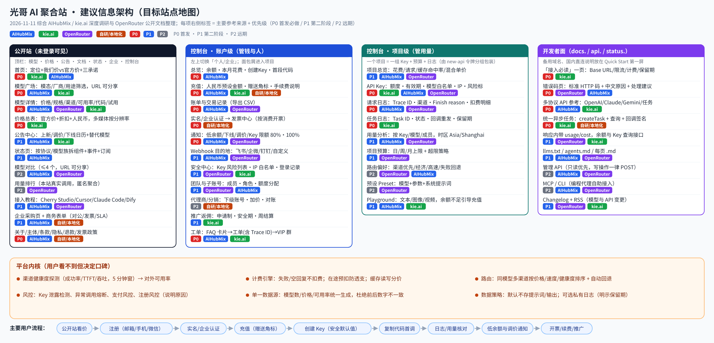

建议策划
这一页把前面的结论落成可以开工的方案：目标站点地图、导航和数据模型、关键页面的线框描述、「功能 → 取自哪个站」映射表，以及上线后看哪些指标。后端按 new-api 类系统（令牌、分组、渠道、日志）估算，这一点是推断，需要光哥按实际系统确认。
目标站点地图
下图是建议的信息架构。每项下方的标签是优先级和主要参考来源。SVG 和 Mermaid 源码见 sitemap.svg 和 sitemap.mmd。


导航
- 公开站顶栏：模型 · 价格 · 公告 · 文档 · 状态 · 企业 · 「控制台」按钮。价格页和模型广场未登录也能看，用控制台外壳（参考 kie.ai），看完价格可以直接注册，不用换环境。
- 控制台左栏 · 账户级：总览 · 充值与账单 · 发票 · 通知 · 安全 · 团队与子账号 · 推广 · 工单 · 设置。
- 控制台左栏 · 项目级（面包屑「企业名 / 项目名」切换，参考 AIHubMix）：项目总览 · API Key · 日志（请求 / 任务两个页签）· 用量 · 预算 · 设置。
- 全局：⌘K 搜模型和页面（P1）；铃铛打开站内信，页签为 全部 / 系统 / 模型 / 公告（P1）。
数据模型
主体（个人 / 企业，带认证状态）→ 钱包（余额、预扣、发票额度）→ 项目（预算、默认分组）→ Key（额度、有效期、模型白名单、IP 白名单、默认路由档位）→ 请求 / 任务（trace id、渠道、扣费、状态）。企业主体下可以挂多个子账号（成员），成员自建的 Key 计入该成员的额度，新建 Key 不会重置成员计数（这一条照 OpenRouter 的规则 [OR39]）。代理商（P2）是一种特殊主体，可以给下级主体设加价规则。
关键页面线框描述
以下是 8 个关键页面的区块和来源，从上到下排列。
控制台首页 参考：AIHubMix Profile KPI 卡 + Quick Start
顶栏：面包屑「个人 / 默认项目」· ⌘K · 铃铛 · 头像
余额（人民币）+ 「充值」按钮
本月花费 / 昨日花费
认证状态：未认证时显示「完成企业认证可开专票」
两步上手：① 创建 Key（打开抽屉）② 复制代码（curl / Python / Node 页签，Base URL 和 Key 已填好）
公告：最近 3 条上新 / 调价 / 下线
最近 7 天花费柱状图（按模型）
低余额告警开关（默认开启，阈值可改）
价格总表 参考：kie.ai /pricing
页签：全部 / 对话 / 图像 / 视频 / 音频（计数按模型）· 搜索 · 「仅看折扣」开关
说明条：价格单位 ¥；官方价来源与更新时间；失败不扣费；限流规则链接
模型分组卡：模型名 + 厂商 + 用途标签 + 「详情 / 试用」
逐行：模式 × 分辨率 / 时长 → 我们价（¥）· 官方价（划线）· 折扣（绿色）· 计费公式提示
模型广场 参考：AIHubMix /models + kie.ai /market
一行横向标签：模态 · 厂商 · 用途（点击后写进 URL）；「更多筛选」默认收起
卡片：模型名 · 厂商角标 · 输入 / 输出价 · 上下文 · 折扣胶囊 · New 标 · 复制模型 ID
卡片 …
卡片 …
模型详情（文本） 参考：OpenRouter 模型页 + AIHubMix 详情
标题 · 复制 ID · 「试用」「API」· 首屏摘要：输入 / 输出价、上下文、发布日期
左侧锚点：价格 · 规格 · 渠道 · 稳定性 · 代码 · FAQ
价格表（输入 / 输出 / 缓存读 / 缓存写）→ 能力清单（不支持的项灰显）→ 渠道分组表（P2 加可用率、延迟）→ 代码示例 → 下线计划（如有）
API Key 创建抽屉 参考：kie.ai Create API Key + AIHubMix 抽屉
名称（必填，未填时「创建」按钮置灰）· 所属项目
额度上限（默认建议值）+ 重置周期
有效期：1 / 7 / 30 / 90 天 / 永久（选永久时给出警示）
IP 访问：仅指定 IP（推荐，默认选中）· 一键填入最近调用的 IP / 本机 IP / 手动输入（CIDR）
模型范围：全部 / 指定模型 · 路由档位（P2）
底部提示：Key 只显示一次
日志 参考：AIHubMix Request logs + kie.ai Logs
顶部横幅：日志保留 N 天，媒体文件保留 N 天
页签：请求 / 任务 · 筛选：时间、Key、模型、状态、trace id 或 Task ID · 导出 CSV · 列设置
列：时间 · 模型（实际） · 渠道分组 · 输入 / 输出 / 缓存 tokens · 扣费（¥） · 状态（成功 / 失败未计费 / 回退） · Finish reason · trace id
行展开：费用拆分 · 回退过程（P2）· 「复制 trace id 去提工单」· 任务行可重发回调
充值与发票 参考：AIHubMix Purchase + kie.ai Billing + 自研
余额 + 预扣中金额 + 可开票金额
限流档位与提额申请
自动充值（P1）
预设金额（带赠送角标）+ 自定义 · 支付方式：微信 / 支付宝 / 对公转账 · 兑换码 · 底部显示当前充值账户
交易记录（可导出）
发票中心：申请（按已消费金额）· 进度 · 下载；未认证时引导认证
状态页 参考：AIHubMix status + OpenRouter status
总状态横幅 + 订阅（邮件 / 飞书）
组件：OpenAI 兼容 · Claude 兼容 · Gemini 兼容 · 图像 · 视频 · 控制台；每个组件 90 天条形图 + 可用率
事件记录：时间（北京时间）· 影响范围 · 处理过程 · 复盘链接
功能 → 来源映射表
| 功能 | 取自 | 级别 | 落地说明 |
|---|---|---|---|
| 价格总表（我们价 / 官方价 / 折扣） | kie.ai | P0 | 人民币直标；按模型计数 |
| 模型卡片（价格、上下文、速度、折扣胶囊） | AIHubMix | P0 | 速度数据等有监控后再显示 |
| 筛选写进 URL、用途标签 | kie.ai | P0 | /models/video/lip-sync 一类路径 |
| 模型详情：价格 4 档 + 规格 + 代码 | AIHubMix + kie.ai | P0 | 代码里自动填好 Base URL 和模型名 |
| 模型详情：渠道表 + 可用率 | OpenRouter + AIHubMix | P2 | 需要渠道监控数据 |
| 多媒体参数表单 + 价格网格 + 试跑 | kie.ai | P1 | 试跑前显示预计扣费 |
| 首页：定位 + 三条承诺 + 价格对比 + FAQ | kie.ai | P0 | 数字来自同一配置 |
| 控制台首页：余额、本月花费、首段代码 | AIHubMix（建议） | P0 | 新用户 1 分钟内完成首次调用 |
| Key 弹窗：安全默认值 + 最近 IP | kie.ai | P0 | new-api 已有字段，主要是重做表单 |
| Key 字段：额度、项目、模型范围 | AIHubMix | P0 | |
| Key 风险列表、批量设限 | OpenRouter | P1 | |
| Key 映射 / 回退 | AIHubMix | P2 | BETA 标记 + 数量上限 |
| 请求日志列 + 列设置 | AIHubMix | P0 | 加 trace id、扣费明细 |
| 任务日志：Task ID、回调重发、保留期 | kie.ai | P0 | |
| 生成详情：上游尝试明细、费用拆分 | OpenRouter | P2 | |
| 用量导出 CSV | OpenRouter + kie.ai | P0 | 月度对账单的数据来源 |
| 用量 KPI：缓存命中率、混合单价 | AIHubMix + OpenRouter | P1 | 时区 Asia/Shanghai |
| 充值弹窗：预设金额、手续费说明、当前账户 | AIHubMix | P0 | |
| 套餐赠送角标 | kie.ai | P0 | 角标比例与实际赠送一致 |
| 限流规则写在充值页 | kie.ai | P0 | |
| 对公转账、企业认证、发票中心 | 自研（参考硅基流动） | P0 | 先上表单 + 人工处理 |
| 合同、月度对账单 | 自研 | P1 | |
| 空回复 / 报错不计费 | OpenRouter + kie.ai | P0 | 写进条款 |
| 在途预扣 | OpenRouter | P0 | 超出时返回 402 并说明原因 |
| 标准错误码 + 中文原因 + trace id | OpenRouter + AIHubMix | P0 | 反面教材是 kie.ai 的「错误也返回 200」 |
| 响应内 cost 字段 | OpenRouter | P1 | |
| 低余额告警 | AIHubMix + OpenRouter | P0 | 余额明显回升后才会再次提醒 |
| 下线 / 调价 / Key 限额通知 | AIHubMix + OpenRouter | P1 | |
| 飞书 / 企微 / 钉钉 Webhook | AIHubMix（Lark 等）+ 自研 | P1 | |
| 状态页（按协议拆组件） | AIHubMix + OpenRouter | P1 | Uptime Kuma 一类工具 |
| 公告中心（上新 / 调价 / 下线日历） | AIHubMix + kie.ai | P1 | 下线模型返回专用错误码 |
| 接入必读 + 备用域名 | kie.ai + AIHubMix | P0 | |
| 错误码页 | OpenRouter | P0 | |
| 统一异步任务接口 + 签名回调 | kie.ai（签名改进） | P0 | 签名覆盖时间戳 + 原始请求体 |
| llms.txt / 每页 .md | AIHubMix + OpenRouter | P1 | |
| 工具接入教程卡片 | AIHubMix | P1 | Cherry Studio、Cursor、Claude Code、Dify |
| 工单（FAQ 卡片 + trace id） | AIHubMix | P0 | |
| 付费客户专属群 | kie.ai（VIP 频道思路） | P1 | 飞书 / 企业微信 |
| 推广返佣规则 | kie.ai | P1 | 安全期 + 防刷 + 周结算 |
| 项目 / 工作区 + 预算 | AIHubMix + OpenRouter | P1 | 日 / 周 / 月预算 |
| 子账号、成员额度 | OpenRouter + LiteLLM | P1 | 下级额度不能超过上级 [X1] |
| 安全中心（登录记录、IP 白名单） | OpenRouter | P1 | |
| 审计日志 | AIHubMix（路由）+ 自研 | P1 | |
| 路由档位（经济 / 标准 / 高速）+ 回退数组 | OpenRouter | P2 | 对应后台渠道分组 |
| latest 别名、预设 | OpenRouter | P2 | |
| 代理商 / 分销后台 | 自研 | P2 | 加价规则 + 对账 |
| Playground | AIHubMix | P1 | 余额不足时引导充值 |
| 模型对比、用量排行 | AIHubMix + OpenRouter | P2 | |
| 管理 API / MCP / CLI | AIHubMix + OpenRouter | P2 | 先做只读 |
| SSO、SLA、数据不留存承诺 | OpenRouter | P2 | 企业客户出现后做 |
上线后看哪些指标
| 指标 | 定义 | 说明 |
|---|---|---|
| 首次调用时长 | 注册到第一次成功请求的时间中位数 | 衡量首页、Key 弹窗、接入必读做得好不好；目标是几分钟以内 |
| 首充转化率 | 注册后 7 天内完成首次充值的比例 | 衡量价格页和充值页 |
| 扣费类工单占比 | 「为什么扣这么多」「余额怎么变负的」类工单占全部工单的比例 | 衡量计费规则、日志明细和预扣 |
| 错误率与平均恢复时间 | 按协议 / 模型族统计 5xx 比例和事件恢复时间 | 和状态页保持一致 |
| 模型变动类咨询量 | 下线、调价相关咨询数量 | 衡量公告中心和通知 |
| 企业客户占比与开票金额 | 企业认证账号数、对公充值金额、开票金额 | 衡量 B2B 闭环 |
| 月留存与净收入留存 | 次月仍有消费的客户比例；老客户消费金额变化 | B2B 转售的核心经营指标 |
风险与待确认
- 合规：面向国内提供生成式 AI 服务、转售境外模型、跨境数据传输的具体义务，本报告没有核实，上线前需要律师确认。
- 后端能力：在途预扣、空回复不计费、标准错误码、渠道健康度统计，是否需要改造现有 new-api 类后端，需要光哥按实际代码确认。本报告的工期估算是推断。
- 价格对比的依据：「官方价」要有可查的出处，并标注更新时间；活动价到期要自动恢复，避免宣传口径和实际扣费不一致。
- 渠道透明的边界：公开渠道分组和来源类型有助于建立信任，但具体上游供应商是否公开，需要权衡商业因素。
- OpenRouter 的做法不能全部照搬：它的收入来自充值平台费，推理按渠道标价、不加价 [OR1]；你是批发转售，毛利在价差里。可以借鉴的是规则透明，而不是定价模式本身。